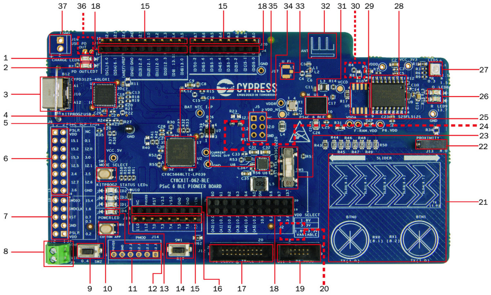

PSoC63 BLE Pioneer Kit¶
Overview¶
The PSoC 6 BLE Pioneer Kit (CY8CKIT-062-BLE) is a hardware platform that enables design and debug of the Cypress PSoC 63 BLE MCU.
The PSoC 6 BLE Pioneer Kit features the PSoC 63 MCU: a dual-core MCU, with a 150-MHz Arm Cortex-M4 as the primary application processor and a 100-MHz Arm Cortex-M0+ that supports low-power operations, 1MB of Flash, 288KB of SRAM, an integrated BLE 4.2 radio, 78 GPIO, 7 programmable analog blocks, 12 programmable digital blocks, and capacitive-sensing with CapSense.
The PSoC 6 BLE Pioneer board offers compatibility with Arduino shields, a 512-Mb NOR flash, onboard programmer/debugger (KitProg2), USB Type-C power delivery system (EZ-PD™ CCG3), 5-segment CapSense slider, two CapSense buttons, one CapSense proximity sensing header, an RGB LED, two user LEDs, and one push button.
The CY8CKIT-062-BLE package includes a CY8CKIT-028-EPD E-INK Display Shield that contains a 2.7-inch E-INK display, a motion sensor, a thermistor, and a PDM microphone. The kit package also contains a CY5677 CySmart BLE 4.2 USB Dongle that is factory-programmed to emulate a BLE GAP Central device, enabling you to emulate a BLE host on your computer.
The Cortex-M0+ is a primary core on the board’s SoC. It starts first and enables the CM4 core.
{kind=link}
Battery charging indicator (LED6)
USB PD output voltage availability indicator (LED7)
KitProg2 USB Type-C connector (J10)
Cypress EZ-PD™ CCG3 Type-C Port Controller with PD (CYPD3125-40LQXI, U3)
KitProg2 programming mode selection button (SW3)
KitProg2 I/O header (J6)1
KitProg2 programming/custom application header (J7)1
External power supply connector (J9)
PSoC 6 BLE user button (SW2)
KitProg2 application selection button (SW4)
Digilent® Pmod™ compatible I/O header (J14)1
Power LED (LED4)
KitProg2 status LEDs (LED1, LED2, and LED3)
PSoC 6 reset button (SW1)
PSoC 6 I/O header (J18, J19 and J20)
Arduino™ Uno R3 compatible power header (J1)
PSoC 6 debug and trace header (J12)
Arduino Uno R3 compatible PSoC 6 I/O header (J2, J3 and J4)
PSoC 6 program and debug header (J11)
KitProg2 programming target selection switch (SW6)
CapSense slider and buttons
CapSense proximity header (J13)
PSoC 6 BLE VDD selection switch (SW5)
PSoC 6 BLE power monitoring jumper (J8)2
Arduino Uno R3 compatible ICSP header (J5)1
PSoC 6 user LEDs (LED8 and LED9)
RGB LED (LED5)
Cypress 512-Mbit serial NOR Flash memory (S25FL512S, U4)
Cypress serial Ferroelectric RAM (U5)1
VBACKUP and PMIC control selection switch (SW7)2
Cypress PSoC 6 BLE (CY8C6347BZI-BLD53, U1)
BLE Antenna
U.FL connector for external antenna (J17)1
Cypress main voltage regulator (MB39C022G, U6)
KitProg2 (PSoC 5LP) programmer and debugger(CY8C5868LTI-LP039, U2)
Battery connector (J15)1,2
USB PD output voltage (9V/12V) connector (J16)
Hardware¶
For more information about the PSoC 63 BLE MCU SoC and CY8CKIT-062-BLE board:
Supported Features¶
The board configuration supports the following hardware features:
Interface |
Controller |
Driver/Component |
|---|---|---|
NVIC |
on-chip |
nested vectored interrupt controller |
SYSTICK |
on-chip |
system clock |
GPIO |
on-chip |
gpio |
PINCTRL |
on-chip |
pin control |
SPI |
on-chip |
spi |
UART |
on-chip |
serial port-polling; serial port-interrupt |
The default configurations can be found in the Kconfig boards/arm/cy8ckit_062_ble/cy8ckit_062_ble_m0_defconfig for Cortex-M0+ and on the Kconfig boards/arm/cy8ckit_062_ble/cy8ckit_062_ble_m4_defconfig for Cortex-M4
System Clock¶
The PSoC 63 BLE MCU SoC is configured to use the internal IMO+FLL as a source for the system clock. CM0+ works at 50MHz, CM4 - at 100MHz. Other sources for the system clock are provided in the SOC, depending on your system requirements.
Serial Port¶
The PSoC 63 BLE MCU SoC has 8 SCB blocks and each one can be configured as UART/SPI/I2C interfaces for serial communication. At the moment UART5 on SCB5 and UART6 on SCB6 are configured. SCB5 is connected to the onboard KitProg2’s USB-UART Bridge working as a serial console interface. SCB6 to P13_0, P13_1 pins on the J3 of the Arduino Uno R3 compatible PSoC6 I/O header for general purposes.
Programming and Debugging¶
The CY8CKIT-062-BLE includes an onboard programmer/debugger (KitProg2) with mass storage programming to provide debugging, flash programming, and serial communication over USB. There are also PSoC 6 program and debug headers J11 and J12 that can be used with Segger J-Link [default]. A watchdog timer is enabled by default. To disable it call Cy_WDT_Unlock() and Cy_WDT_Disable().
Build the Zephyr kernel and the Hello World sample application:
west build -b cy8ckit_062_ble_m0 samples/hello_worldRun your favorite terminal program to listen for output. Under Linux the terminal should be
/dev/ttyACM0. For example:$ minicom -D /dev/ttyACM0 -oThe -o option tells minicom not to send the modem initialization string. Connection should be configured as follows:
Speed: 115200
Data: 8 bits
Parity: None
Stop bits: 1
To flash an image:
west build -b cy8ckit_062_ble_m0 samples/hello_world west flash
You should see “Hello World! cy8ckit_062_ble_m0” in your terminal.
Running on Dual Core¶
Build the Zephyr kernel and the Button sample application:
west build -b cy8ckit_062_ble_m4 samples/basic/buttonIf you have a USB-Serial adapter, you can connect SBC[UART]-6 on Arduino header. Schematic should be checked for connections. Run your favorite terminal program again now listen for another output. Under Linux the terminal should be
/dev/ttyUSB0. For example:$ minicom -D /dev/ttyUSB0 -oThe -o option tells minicom not to send the modem initialization string. Connection should be configured as follows:
Speed: 115200
Data: 8 bits
Parity: None
Stop bits: 1
To flash an image:
west build -b cy8ckit_062_ble_m4 samples/basic/button west flash
Configure Cortex-M0+ to enable Cortex-M4:
The last step flash the M4 image on the flash. However, Cortex-M0 by default doesn’t start the M4 and nothing will happen. To enable Cortex-M4 CPU, repeat the steps on programming and debug and add the following parameter when performing the build process.
west build -b cy8ckit_062_ble_m0 samples/hello_world -- -DCONFIG_SOC_PSOC6_M0_ENABLES_M4=y west flash
Now you can press button SW-2 and see LED-9 blink at same time you have the “Hello World! cy8ckit_062_ble_m0” in the your terminal.
Board Revision¶
The CY8CKIT-062-BLE KitProg2 shares connections with Arduino-R3 header. This connections may not allow the correct use of shields. The default board revision (0.0.0) allows use of default connections. The use of Arduino headers are only possible after rework the board and using the revision 1.0.0.
Build the Zephyr kernel and the Hello World sample application for board revision 1.0.0:
west build -b cy8ckit_062_ble_m0@1.0.0 samples/hello_worldThe diferences from version 0.0.0 to 1.0.0:
Connecion |
0.0.0 |
1.0.0 |
|---|---|---|
CDC-COM RX |
P5_0 |
P9_0 |
CDC-COM TX |
P5_1 |
P9_1 |
R77 |
X |
|
R78 |
X |
The P9 pins are available at J2. Those signals should be routed to J6.
J2-2 to J6-14 J2-4 to J6-13
The most complex part is short circuit pins 14 and 15 from U13. That connect UART_RTS with UART_CTS from KitProg2.